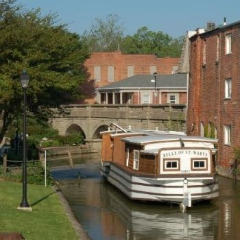
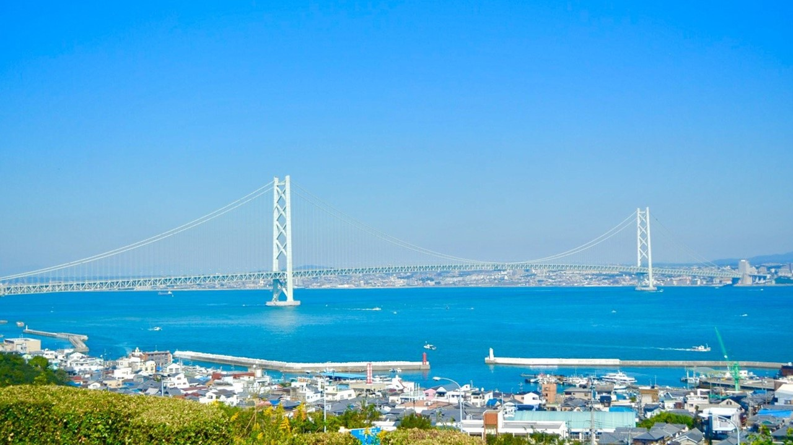

Welcome
The St. Marys-Awaji City Sister Cities Organization is proud to foster cultural, educational, and social exchanges between St. Marys, Ohio and Awaji City, Japan. Since our partnership was established in 1985, we have facilitated meaningful connections between our communities.
Our organization organizes delegations, cultural events, and educational exchanges that strengthen the bonds between our two communities. We welcome individuals interested in learning about Japanese culture, making international friends, and participating in our delegation trips.
Events Calendar
About Our Partnership
Our Mission
The St. Marys-Awaji City Sister Cities Organization is dedicated to promoting peace, friendship, and cultural understanding between our communities. Through youth exchanges, educational programs, and cultural events, we build lasting connections that transcend geography and language.
What We Do
- Organize delegation trips to Awaji City, Japan
- Host visiting delegations from Awaji City
- Support youth and educational exchanges
- Promote Japanese cultural events in St. Marys
- Facilitate business and professional connections
- Organize fundraising events to support our mission
Get Involved
Are you interested in joining our organization or participating in a delegation trip? We welcome people of all ages and backgrounds! Contact us to learn more about membership, upcoming trips, and volunteer opportunities.
Our Sister Cities

St. Marys, Ohio
Population: ~8,200
Location: Auglaize County, Ohio
A vibrant community in northwest Ohio with a rich history and strong sense of community pride.

Awaji City, Japan
Population: ~160,000
Location: Hyogo Prefecture, Japan
A beautiful island city known for its natural scenery, cultural heritage, and warm hospitality.
Get in Touch
Contact Information
(Contact coordinator for specific address)
We're planning another delegation trip to Awaji City! Contact us to express your interest in joining.